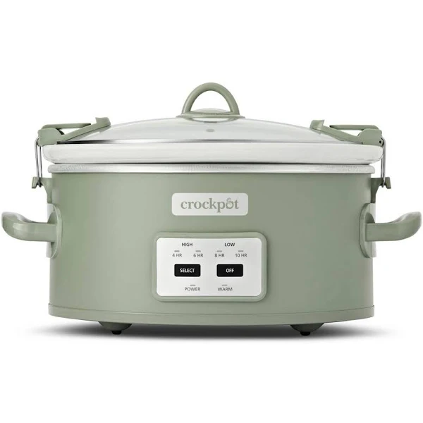
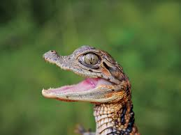
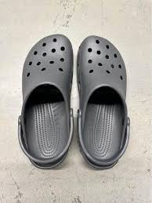

While he may have eaten a man in 2001, he is a lovely man.
Its size can accomodate many, allowing for family gatherings.
Know for daring escapes from her pen, Bethany is always up for an adventure.
| Croc | Pic | Description |
|---|---|---|
| Arnold | |
Arnold always has a smile on his face. While he may have eaten a man in 2001, he is a lovely man. |
| 6qt Cook and Carry |  | This croc can handle anything from soup,stew,roasts, and more. Its size can accomodate many, allowing for family gatherings. |
| Bethany |  | While Bethany may be young, she is smart. This croc is reserved for the most experienced croc-doptors. Know for daring escapes from her pen, Bethany is always up for an adventure. |
| Size 11 |  | Basic Womens size 11 black crocs, non-slip, padded hells, and wide toebox. |
| Garbo | Garbo eats anyting. Chicken. Trash. Children. Chicken. You have been warned |